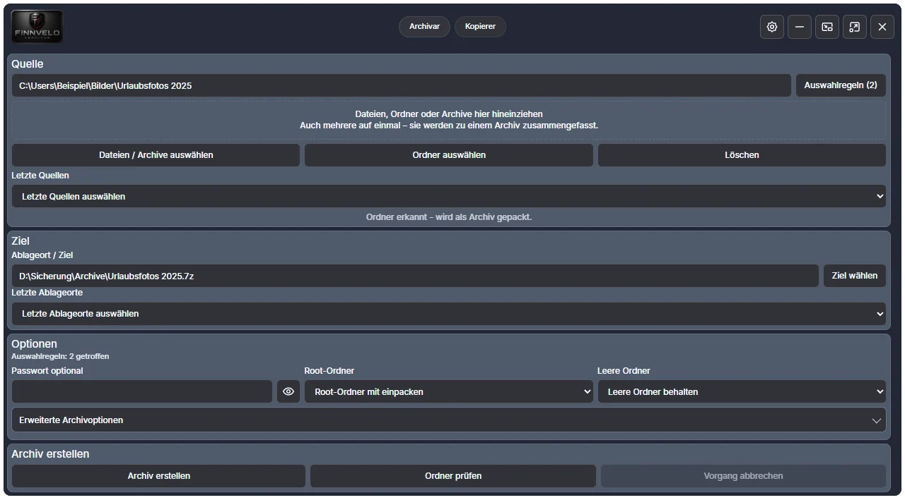
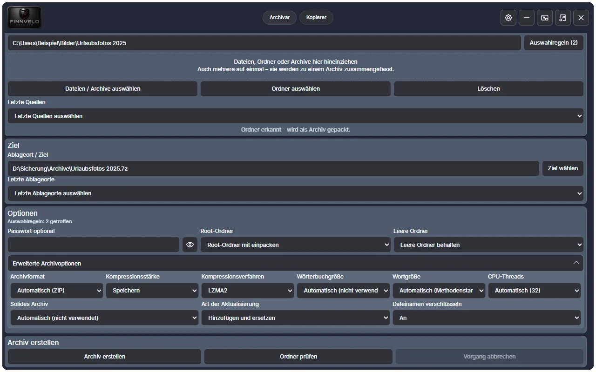
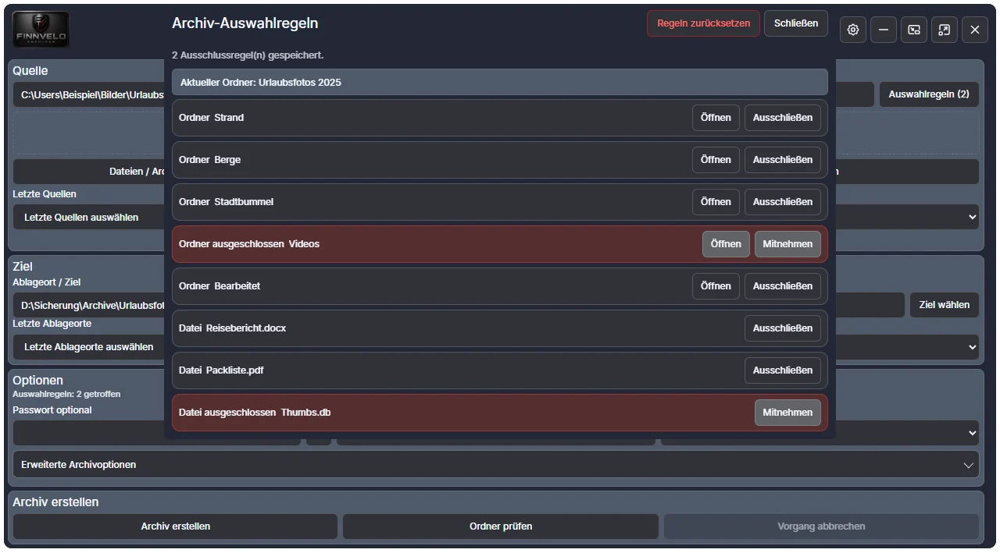
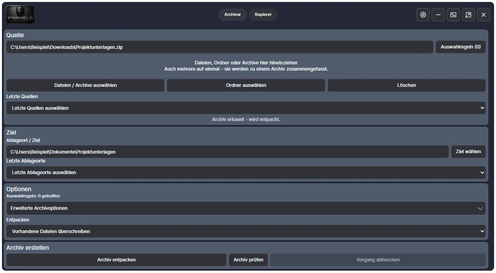
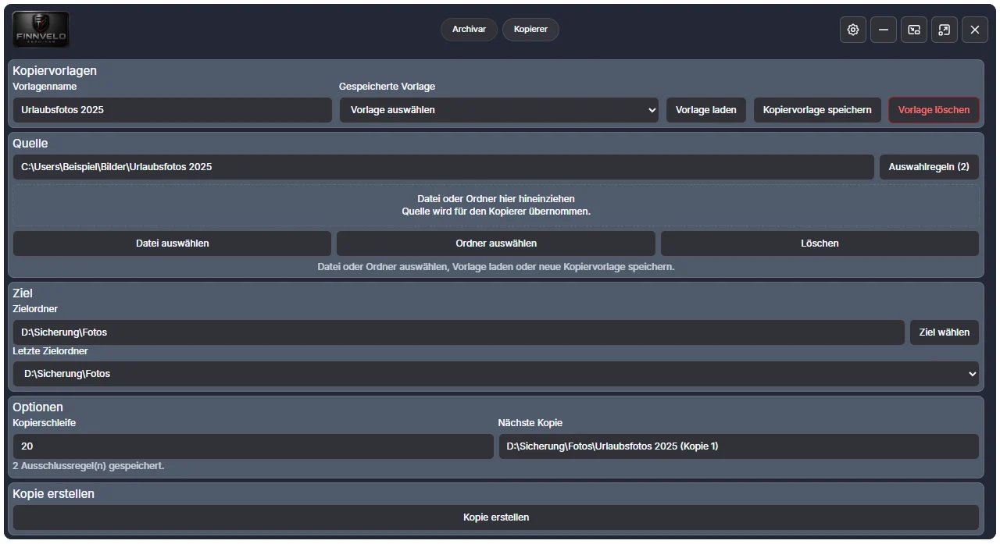
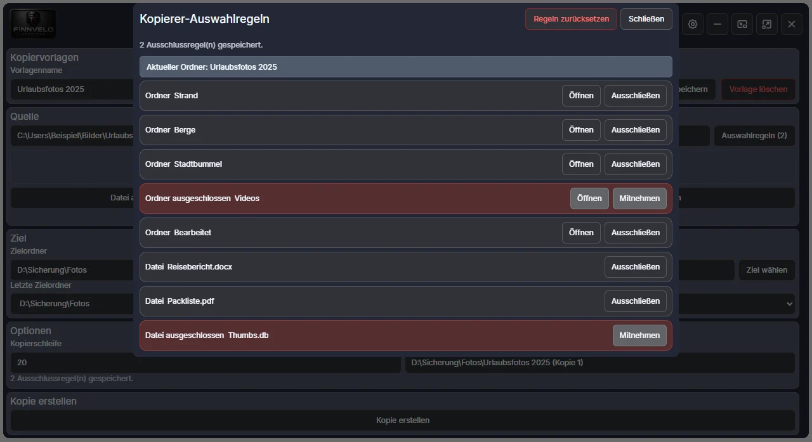
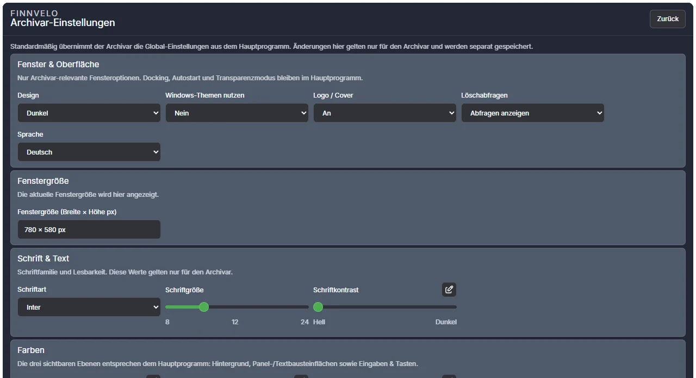
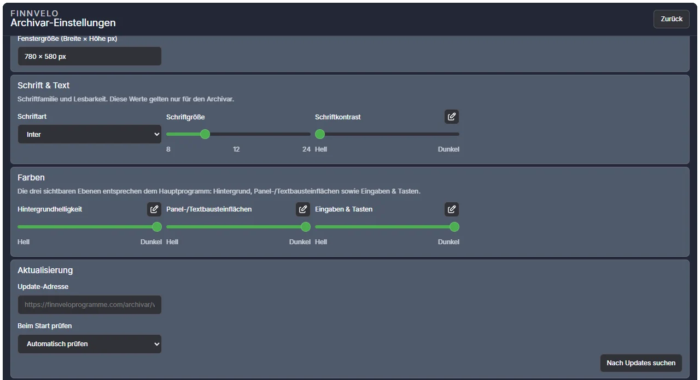

Archivieren · Entpacken · Kopieren
Finnvelo Archivar
Finnvelo Archivar ist ein modernes Windows-Programm zum Archivieren, Entpacken und strukturierten Kopieren von Dateien und Ordnern. Es verbindet klassische Archivfunktionen mit einer intelligenten Kopierfunktion für Sicherungen, Projektstände und wiederkehrende Dateiabläufe.
Beschreibung
Der Finnvelo Archivar packt Dateien und Ordner zu Archiven, entpackt vorhandene Archive und legt Sicherungskopien an – in einem schlanken Windows-Programm. Was du hineinziehst, erkennt er selbst: Ordner und Dateien werden gepackt, Archive entpackt. Ziehst du mehrere Dateien oder Ordner auf einmal hinein, fasst er sie zu einem gemeinsamen Archiv zusammen. Über den Rechtsklick im Windows-Explorer („Mit Finnvelo Archivar archivieren“) kommen Dateien und Ordner auch ohne Umweg ins Programm.
Archiviert wird mit der bewährten 7-Zip-Technik: als 7z, ZIP, TAR oder WIM, mit Kompressionsstärke von „Speichern“ bis „Ultra“, auf Wunsch mit Passwort und verschlüsselten Dateinamen. Entpacken klappt mit ZIP, 7z, RAR, TAR, GZ, BZ2, XZ und WIM. Jeder Vorgang zeigt Fortschritt in Prozent und Megabyte und lässt sich jederzeit abbrechen.
Mit Auswahlregeln legst du fest, was nicht ins Archiv soll – zum Beispiel einen Videoordner oder Systemdateien wie „Thumbs.db“. Du blätterst dazu durch die Quelle und schließt Unterordner und Dateien mit einem Klick aus oder nimmst sie wieder mit. Außerdem bestimmst du, ob der oberste Ordner selbst mit eingepackt wird und ob leere Ordner erhalten bleiben. Vor dem Packen prüft „Ordner prüfen“ die Quelle, nach dem Packen kontrolliert „Archiv prüfen“ das Ergebnis.
Der eingebaute Kopierer ist für wiederkehrende Sicherungen gedacht: Quelle, Zielordner, Auswahlregeln und die Zahl der Kopien speicherst du als Vorlage. Bei jedem Lauf legt er die nächste nummerierte Kopie an – „Urlaubsfotos 2025 (Kopie 1)“, „(Kopie 2)“ und so weiter – und zeigt vorher an, welche als Nächstes entsteht. Ist die eingestellte Anzahl erreicht, ersetzt er reihum die älteste. So hast du immer mehrere Stände, ohne dass der Platz unbegrenzt wächst.
Die zuletzt genutzten Quellen und Ablageorte merkt sich der Archivar zum schnellen Wiederaufruf. Design, Schrift, Farben und Sprache stellst du in seinen Einstellungen ein, neue Fassungen meldet er auf Wunsch beim Start. Den Archivar gibt es als eigenständiges Programm, er steckt aber auch in Finnvelo Command Control – dort öffnest du ihn direkt aus der oberen Leiste.
Archivieren und Entpacken
Packen als 7z, ZIP, TAR oder WIM, entpacken auch RAR, GZ, BZ2 und XZ – der Archivar erkennt selbst, was zu tun ist. Mit Fortschritt, Passwort und Abbruch.
Auswahlregeln
Unterordner und Dateien gezielt ausschließen – durch die Quelle blättern und mit einem Klick ausschließen oder wieder mitnehmen.
Integrierter Kopierer
Wiederkehrende Kopien als Vorlage speichern – mit Quelle, Zielordner, Kopienanzahl und Auswahlregeln.
Automatische Kopierschleife
Nummerierte Kopien reihum. Vorab siehst du, welche Kopie als Nächstes entsteht; nach der eingestellten Anzahl wird die älteste ersetzt.
Windows-Integration
Rechtsklick auf Dateien oder Ordner: „Mit Finnvelo Archivar archivieren“. Auf freier Fläche im Ordner: „Finnvelo Archivar hier öffnen“.
Mehrsprachige Oberfläche
Bedienbar in Deutsch, Englisch, Französisch, Spanisch, Italienisch, Niederländisch, Polnisch, Tschechisch, Dänisch und Türkisch.
Mehrere Quellen, ein Archiv
Mehrere Dateien, Ordner oder Archive auf einmal hineinziehen – sie werden zu einem Archiv zusammengefasst.
Erweiterte Archivoptionen
Format, Kompressionsstärke und -verfahren, Wörterbuch- und Wortgröße, CPU-Threads, solides Archiv und Art der Aktualisierung.
Passwortschutz
Archive optional mit Passwort verschlüsseln, auf Wunsch auch die Dateinamen. Beim Entpacken fragt der Archivar nach dem Passwort.
Prüfen vor und nach dem Packen
„Ordner prüfen“ sieht sich die Quelle an, „Archiv prüfen“ kontrolliert ein fertiges Archiv.
Letzte Quellen und Ablageorte
Zuletzt genutzte Quellen, Ablageorte und Zielordner stehen in einer Auswahlliste bereit.
Eigene Darstellung
Dunkles oder helles Design, eigene Schrift und Farben. Im Command Control eingebaut übernimmt er dessen Einstellungen.
Oberfläche
Die folgenden Ansichten zeigen den Finnvelo Archivar 1.1.0 mit einem erfundenen Beispielordner. Ein Klick auf ein Bild öffnet es groß.
Archivieren und Entpacken




Kopierer und Einstellungen




Einstellungen – das kannst du anpassen
Als eigenständiges Programm hat der Archivar seine eigenen Einstellungen. In Finnvelo Command Control eingebaut übernimmt er ab Werk dessen Einstellungen, Änderungen hier gelten dann nur für den Archivar. Dazu kommen die Optionen, die du bei jedem Vorgang wählst:
Fenster und Oberfläche
- DesignDunkel oder hell, auf Wunsch nach den Windows-Themen.
- Logo / CoverDas Logo oben links ein- oder ausblenden.
- LöschabfragenVor dem Löschen von Einträgen nachfragen oder nicht mehr.
- SpracheZehn Sprachen von Deutsch bis Türkisch.
- FenstergrößeZeigt die aktuelle Größe in Pixeln an.
Schrift und Farben
- SchriftartFreie Wahl der Schrift für den Archivar.
- Schriftgröße und KontrastGröße 8 bis 24, Kontrast von hell bis dunkel.
- FarbenHintergrund, Panel- und Textbausteinflächen sowie Eingaben und Tasten – jeweils mit eigenem Farbwert.
Archivoptionen je Vorgang
- PasswortOptional, mit Anzeige zum Gegenprüfen.
- Root-Ordner und leere OrdnerObersten Ordner mit einpacken oder nicht, leere Ordner behalten oder nicht.
- ArchivformatAutomatisch, 7z, ZIP, TAR oder WIM.
- KompressionStärke von „Speichern“ bis „Ultra“, Verfahren LZMA2, LZMA, Deflate, BZip2, PPMd oder ohne.
- FeineinstellungWörterbuchgröße 16 bis 256 MB, Wortgröße, CPU-Threads und solides Archiv.
- Art der AktualisierungHinzufügen und ersetzen, nur neue und neuere, nur vorhandene oder synchronisieren.
- Dateinamen verschlüsselnAn oder aus.
Entpacken und Kopieren
- Vorhandene DateienBeim Entpacken überschreiben, überspringen oder umbenennen.
- KopiervorlagenSpeichern, laden und löschen.
- KopierschleifeWie viele nummerierte Kopien reihum entstehen.
- AuswahlregelnFür Archive und für den Kopierer getrennt, jederzeit zurücksetzbar.
Aktualisierung
- Beim Start prüfenAutomatisch nach neuen Fassungen sehen oder nicht.
- Nach Updates suchenDie Prüfung von Hand anstoßen.
Zurücksetzen
- Auf Global-Einstellungen zurücksetzenVerwirft die eigenen Archivar-Werte und kehrt zu den Grundeinstellungen zurück – im Command Control zu dessen Einstellungen.
Tutorial-Video
Im Tutorial siehst du den Finnvelo Archivar direkt in der Anwendung: Oberfläche, Archivieren, Kopieren und wichtige Programmfunktionen im Überblick.
Besondere Vorteile
- Eigenständiges Windows-Programm zum Packen, Entpacken und Kopieren
- Integrierter Kopierer für wiederkehrende Kopierprozesse
- Speicherbare Kopiervorlagen mit nummerierten Kopien reihum
- Auswahlregeln für Dateien und Unterordner
- Optionaler Passwortschutz, auch für die Dateinamen
- Fortschrittsanzeige mit Prozent- und MB-Anzeige
- Rechtsklick-Menü im Windows-Explorer
- Helles und dunkles Design, zehn Sprachen
- Updatefähiger Installer für spätere Versionen
- Kein unnötiger Autostart
- 7z, ZIP, TAR und WIM packen – dazu RAR, GZ, BZ2 und XZ entpacken
- Ordner und Archive vor und nach dem Packen prüfen
Zielgruppe
Finnvelo Archivar eignet sich für Nutzer, die regelmäßig Projektordner sichern, Arbeitsstände archivieren, Dateien strukturiert kopieren oder wiederkehrende Datei- und Sicherungsprozesse effizienter gestalten möchten.
Besonders hilfreich ist das Programm für Projektarbeit, strukturierte Dateiablagen, Backup-Vorbereitung, Medienordner, Vorlagenordner und wiederkehrende Arbeitsprozesse.
- Wer Fotos, Videos oder Projektordner regelmäßig sichert und dabei mehrere Stände behalten möchte, ohne dass die Sicherung unbegrenzt wächst.
- Wer Archive weitergibt und dabei Unwichtiges wie Vorschaudateien oder Rohmaterial auslassen will.
- Wer vertrauliche Unterlagen verschlüsselt packen möchte – auf Wunsch samt Dateinamen.
- Wer keine Lust auf überladene Packprogramme hat und lieber per Rechtsklick ans Ziel kommt.
Daten und Datenschutz
Der Archivar arbeitet vollständig auf deinem Rechner. Deine Dateien, Archive und Kopien verlassen ihn nicht, es gibt kein Konto und keine Anmeldung. Einstellungen, Vorlagen, Auswahlregeln und die Listen der letzten Quellen und Ablageorte speichert das Programm als Dateien in deinem Benutzerordner unter AppData.
Ins Netz geht der Archivar nur für die Frage nach einer neuen Fassung bei finnveloprogramme.com – und auch das nur, wenn „Beim Start prüfen“ eingeschaltet ist oder du selbst nach Updates suchst.
Download (Android-App)
Hauptdatei
Finnvelo Archivar Setup 1.0.1 · Windows-Installationsdatei.
Letztes Update: 02.06.2026, 18:00 Uhr
Download startenWeitere Versionen und Patches
Hier können später weitere Versionen, Patchdateien und ältere Installationsdateien ergänzt werden.
Download (PC-Version)
Programm herunterladen
Installationsprogramm für Windows. Der Archivar prüft selbst, ob eine neuere Fassung bereitsteht.
PC-Version herunterladenHinweis
Windows meldet bei unbekannten Programmen einen Warnhinweis. Über „Weitere Informationen“ → „Trotzdem ausführen“ lässt sich der Start fortsetzen.